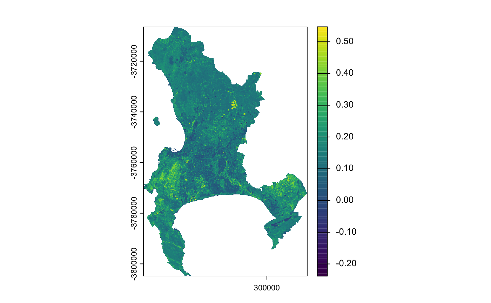
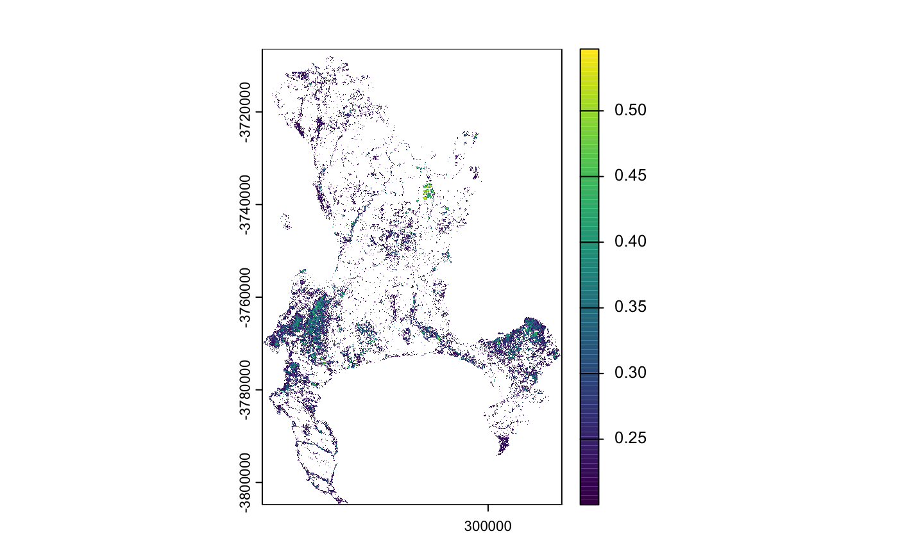
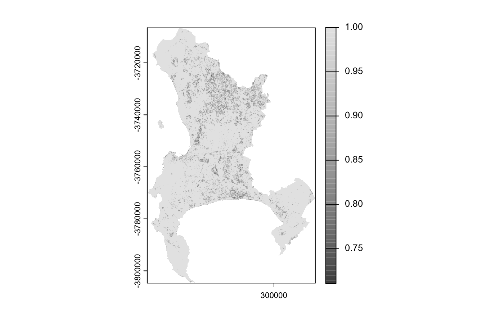
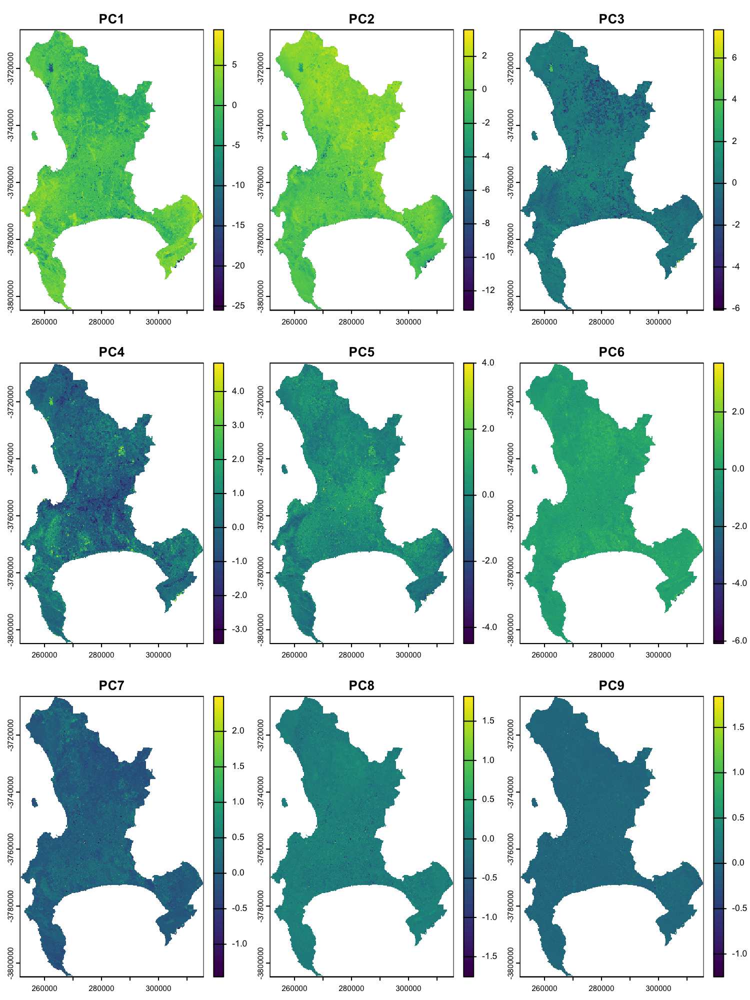
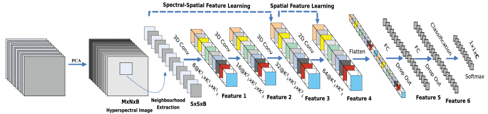
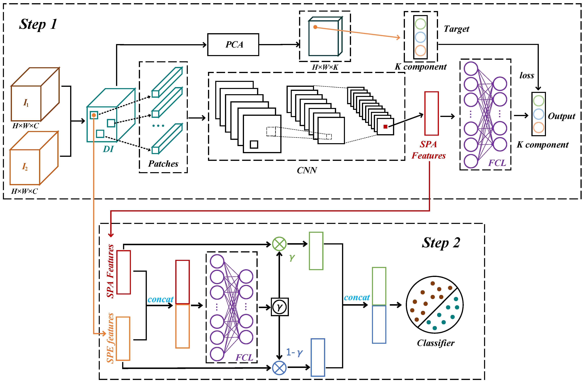

Week3——Feature Extraction and Dimension Reduction
1. Summary
This learning task uses Landsat satellite imagery of Cape Town as its basis. Using the R programming language, we extracted the Normalized Difference Vegetation Index (NDVI) based on spectral features and calculated the Gray-Level Co-occurrence Matrix (GLCM) texture based on spatial features. Finally, we performed dimensional reduction and extracted key features from the multi-source fused data using Principal Component Analysis (PCA). This week’s learning theme focuses on “Advanced Feature Extraction and Data Dimension Reduction.” The primary objective of performing this series of preprocessing operations is to prepare the most concise and highest-quality feature variables for subsequent land cover classification (or machine learning models).
1.1 NDVI: Vegetation Feature Extraction
Based on the principle that different surface materials reflect light differently (healthy vegetation contains chlorophyll, which strongly absorbs red light, while the cellular structure of plants strongly reflects near-infrared light), the calculation is performed using the following formula: \[NDVI = \frac{B5 - B4}{B5 + B4}\]

In the analysis of the Cape Town region, after calculating the NDVI for the entire area, we set a threshold of 0.2. By masking areas with values below this threshold, we successfully removed large areas of non-vegetation backgrounds, such as the ocean, dense urban structures, and bare soil. This process yielded a clean, valid vegetation cover map.

1.2 GLCM: Spatial Texture Feature Extraction
Satellite spectral bands mainly reflect surface color, but not spatial structure. Gray-Level Co-occurrence Matrix (GLCM) quantifies texture by analyzing grey-level variations between neighboring pixels, capturing surface smoothness or roughness.
The formula for converting DN to refractive index is： \(\rho = (DN \times 0.0000275) - 0.2\)）
In this study, using Cape Town as an example, we calculated a 7×7 window homogeneity metric from the red band. The large areas of light gray and pure white in the image represent “high homogeneity,” indicating that the surface in these areas is smooth, such as open water bodies, vegetation, or flat bare ground. The dark gray, densely spotted areas represent “low homogeneity,” indicating that the texture of the adjacent surface is fragmented, corresponding to urban built-up areas, dense residential zones.

1.3 PCA: Multi-source Data Fusion and Dimension Reduction
There is typically a strong correlation between the various bands in multispectral imagery, leading to information redundancy and introducing a certain amount of noise. PCA uses an orthogonal transformation to convert these correlated layers into a set of mutually independent new variables, which are ranked by information content.
We applied PCA to eight spectral bands and one texture band from Cape Town. Most of the useful information is captured in the first few components, while noise and less important variation are pushed into later components. This helps reduce redundancy and provides clearer inputs for land cover classification.

2. Application
Principal Component Analysis (PCA), as a preprocessing step for dimensionality reduction, has been widely applied in remote sensing workflows. For example, (Zabalza et al. 2014) incorporated PCA into a broader feature extraction framework for hyperspectral and Synthetic Aperture Radar (SAR) data. PCA was primarily used to reduce data dimensionality and computational load.
Several recent studies have combined PCA with convolutional neural networks (CNNs). PCA is used to reduce spectral redundancy, while CNNs extract spatial features and perform classification. This approach significantly improves classification accuracy compared to traditional methods(Roy et al. 2020). Essentially, the capabilities of PCA itself have not been enhanced; rather, the introduction of CNNs compensates for PCA’s limitations in representing spatial information.

In addition, some studies have developed more complex processing workflows by combining PCA with multi-stage feature extraction techniques, thereby capturing both global and local features of the data simultaneously. This suggests that in modern remote sensing analysis, PCA is more commonly used as a dimension-reduction tool rather than as a standalone feature extraction method.
- PCA + Spatial-Spectral Fusion: Fusing the global features extracted by PCA with the local features extracted by SSA significantly improves the accuracy of land cover classification(Wang et al. 2021).

- PCA + Hybrid Manifold Learning: Within PCA, apply LPP (Locally Linear Embedding) or t-SNE to preserve the local geometric proximity of the data(Cao et al. 2024).
3. Reflection
Through practical experience, I have found that PCA has some obvious drawbacks. For example, PCA combines the original features linearly into new principal components, which means the results lack intuitive physical or practical meaning. While the plot shows which directions exhibit the greatest variation, it is impossible to clearly determine which light waves are responsible for these changes. Furthermore, since PCA prioritizes retaining information with large variations, useful information may be lost in some practical tasks where features with small variations are often equally important for classification or recognition. Overall, while PCA effectively compresses information, its poor interpretability and insensitivity to nonlinearities and small-amplitude changes are limitations that must be weighed when using the method.